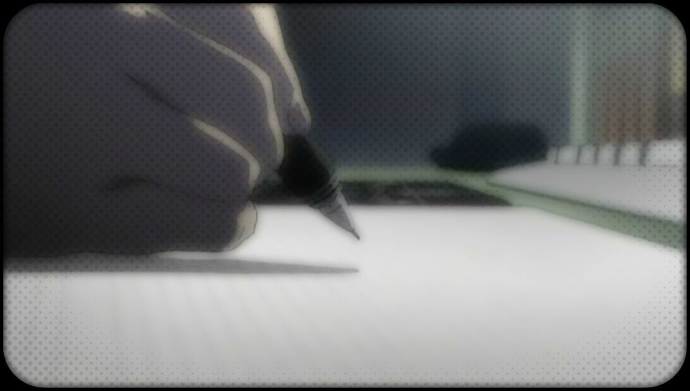

-
Astronomy on tap
Like astronomy, but don't want to leave the bar? Come enjoy some awesome astronomy talks & quizes + prizes, while sipping your favorite cold drink at your local bar. -
March 4 Science
Pasadena
On April 22, 2017, scientists and science supporters marched across the nation in support of defending the advancement of science in this country. The details of the national march can be found here.
That day I co-organized parts of the March here in Pasadena with postdocs from Caltech. We held a rally at Caltech, hosted speeches by local, state and federal representatives (e.g., Rep. Judy Chu, Sen. Anthony Portantino) and marched across Pasadena for all to see. To see some of the amazing folks who showed up and all the support we received from the community, check out the linked pictures.
-
Outreach Around Pasadena
Since Pasadena is one of the biggest hubs of astronomy in the world, there are plenty of activities astrophysicists are engaged into communicate with the public. Check out some of the ones I've been involved with. -
Written Work

Although I am not an avid blogger, I have written a few pieces that have been useful as science popularizing articles and blog posts. Check out a couple pieces that I've written, and in which I've been featured.

Design by TEMPLATED and totally inspired and ripped off from Michael Zingale because I have no website creativity.